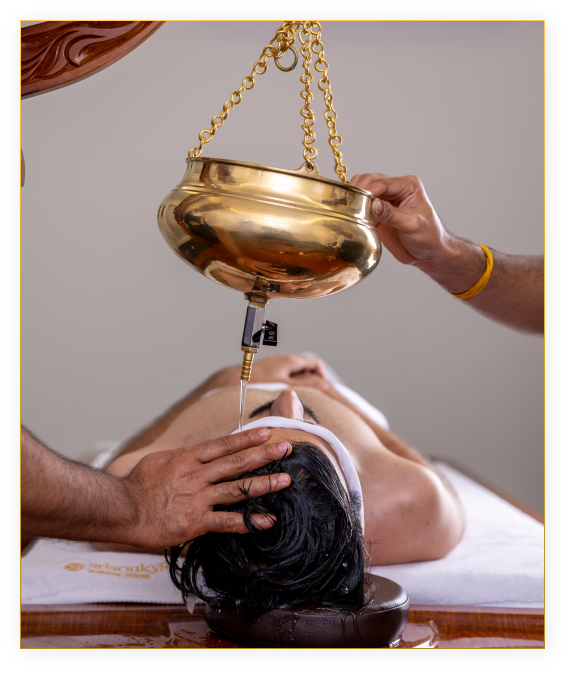
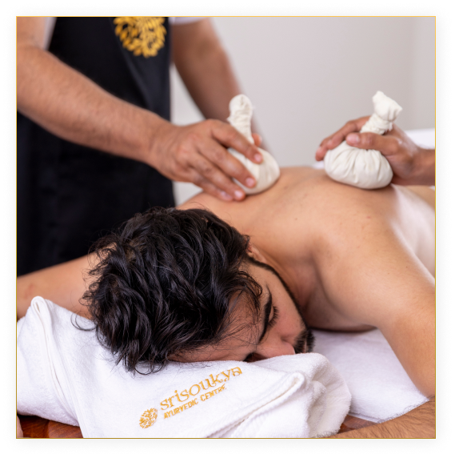
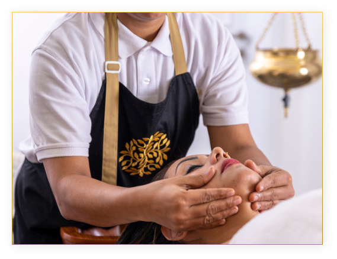
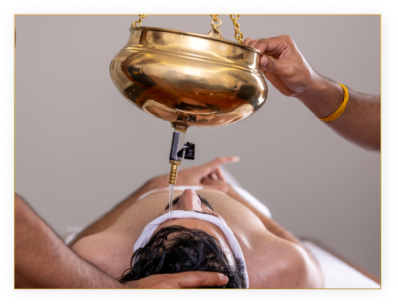
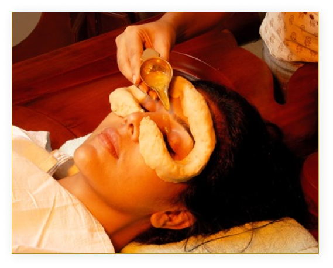
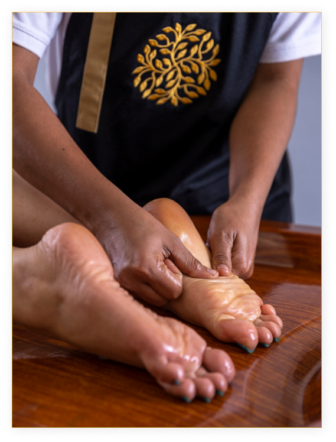

Sarvanga means whole body and abhyanga means massage. Sarvanga Abhyanga is a process in which massage is done to the whole body with the help of medicated oils and ghrits as a preventive and curative therapy. Warm oils deeply penetrate into the cells and release physical, mental and spiritual toxins, hence sarvanga abhyanga works as detoxifying as well as healing cellular therapy.
Duration: 7/14/21/28 Days (For more info book appointment or contact us)

Pizhichil
Pizhichil (literally meaning squeezing) is a unique Ayurvedic therapy from Kerala. In this treatment, a special linen cloth is dipped into warm Kuzhambu, or a medicated oil mixture, and squeezed over the disease-affected areas of the patient. While simultaneously massaging those areas, care is taken to ensure no portion is missed out. Pizhichil is a perfect mix of Snehana (Oleation Therapy) and Swedana (Sudation Therapy).
This treatment improves blood circulation and immunity. It is very effective in the treatment of ailments like muscle cramps, paralysis, rheumatic diseases, arthritis, neurological disorders, and blood pressure issues.
Duration: 7/14/21/28 Days (For more info book appointment or contact us)

Njavarakkizhi
This rejuvenation therapy maintains health and youthfulness, tones up the skin, improves blood circulation and revitalizes the tissues.
A type of rice known as njavara is cooked with herbal oils and milk and then tied up into poultices of cotton. During the massage, the cooked rice gets squeezed out through the cotton cloth onto the body.
Duration: 7/14/21/28 Days (For more info book appointment or contact us)

Sushumnasnanam
Sushumna is the name given to the main energy channel of the subtle body, or sushumna nadi. According to yoga and Ayurveda, vital life force energy known as prana travels along energy pathways called nadis.
Duration: 7/14/21/28 Days (For more info book appointment or contact us)
Nasyam
Nasyam (Errhine Therapy) is a very powerful rejuvenative Panchakarma therapy that involves administering of medicated herbal oils through the nose. It's a method of Kalarichikilsa for treating illnesses related to the head region and impacts are wide-ranging.
Duration: 7/14/21/28 Days (For more info book appointment or contact us)

Thakradhara
Thakradhara is an Ayurvedic procedure that involves pouring medicated buttermilk over a patient’s forehead. This is done because buttermilk has cooling properties that help relax the body and mind. Thakradhara is useful for treating insomnia, hypertension, and psoriasis.
Duration: 7/14/21/28 Days (For more info book appointment or contact us)

Aschothana
Aschothana is the one of the unique procedure done for the eye disorders. The procedure where the medicated drops are surged on the open eyes from a height of two inches in prescribed format is called as Aschothana.
Aaschotana is the first line of treatment in the eye diseases.
Duration: 7/14/21/28 Days (For more info book appointment or contact us)

Padabhyangam
Ayurveda is an indispensable way of living that uses methodically crafted therapies to ensure smooth bodily function and restored wellness. Ayurveda stresses on life-long healing through therapies and procedures. The “mother” of all therapies is known as “Padabhyangam”.Padabhyangam can be loosely translated as “foot massage “or “foot therapy”.
This therapy holds a special place of importance in Ayurveda because our feet connect our body with the earth. Foot care is holistic and involves massaging the pressure points with herbal and medicinal oils. Applying the right massage techniques relieves the body of its ailments and restores the root of our body and soul through our feet.
Duration: 7/14/21/28 Days (For more info book appointment or contact us)